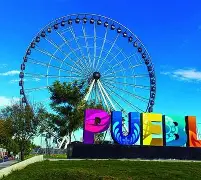
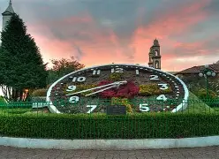
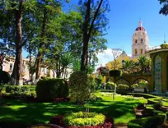
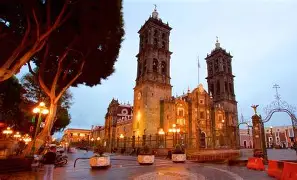
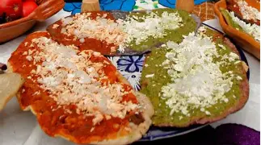
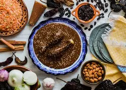

Inicio
Puebla es una de las ciudades más importantes de México, reconocida por su arquitectura colonial, su historia y su cultura.


Información del lugar
Se encuentra en el centro del país y es famosa por su centro histórico, declarado Patrimonio de la Humanidad.
Fue fundada en 1531 y ha sido clave en la historia de México.


Lugares turísticos
Destacan la Catedral de Puebla y la zona arqueológica de Cholula con su gran pirámide.
También el centro histórico con calles coloniales y arquitectura única.

Gastronomía
Puebla es famosa por el mole poblano y los chiles en nogada, platillos tradicionales mexicanos.
Su gastronomía es considerada una de las mejores del país.


Galería
Conclusión
Puebla es un destino ideal para conocer la historia, la cultura y la gastronomía mexicana. Es perfecta para turismo cultural.